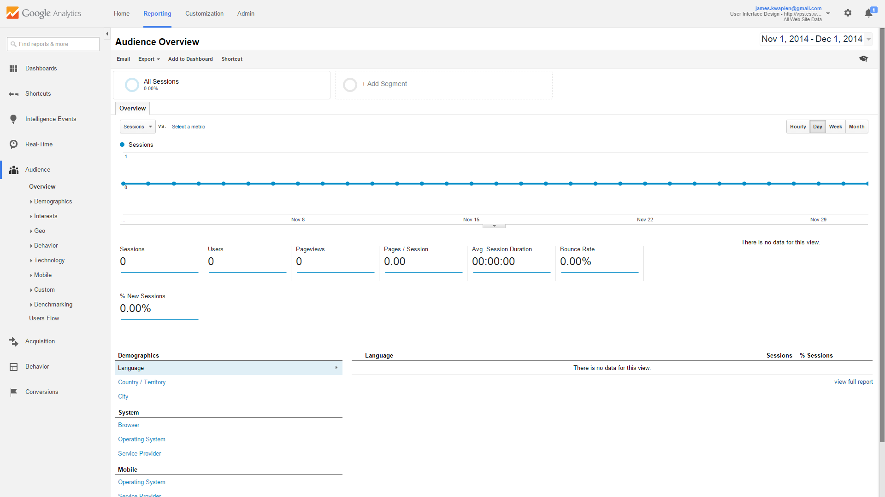

User Interface
Interface Design
8 Golden Rules
Fonts
Color
Sound
Accessibility
Mobile Devices
Native Apps
 Google Analytics
Google AnalyticsInterface Examples
Google Analytics
Google Analytics is a service that provides a platform for evaluation and analysis of web site and mobile app data. The base version is free, although there is a paid premium version available.
Below is the sample code for this website that is integrated on every page to be tracked:
(function(i,s,o,g,r,a,m){i['GoogleAnalyticsObject']=r;i[r]=i[r]||function(){
(i[r].q=i[r].q||[]).push(arguments)},i[r].l=1*new Date();a=s.createElement(o),
m=s.getElementsByTagName(o)[0];a.async=1;a.src=g;m.parentNode.insertBefore(a,m)
})(window,document,'script','//www.google-analytics.com/analytics.js','ga');
ga('create', 'UA-57183498-1', 'auto');
ga('send', 'pageview');
</script>
What this code does is track a huge amount of information about visitors and their behavior on the site. Google Analytics users have a versatile dashboard of tools to view and extrapolate the data that is collected. Below is a screenshot of the dashboard for this site's Google Analytics' account.
CLICK THE IMAGE FOR A FULL PICTURE.

Note that there are a large amount of options, including individual sections for audience evaluation, acquisition, etc. There is even a section of the dashboard devoted to data in real time. All of these factors contribute to make Google Analytics a feature rich option that is easy to implement.
{kind=link}